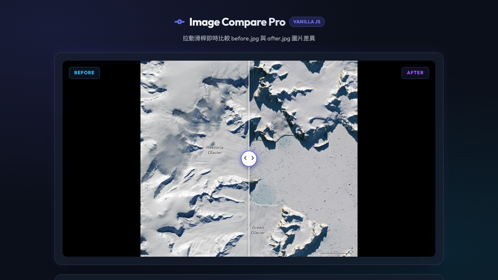
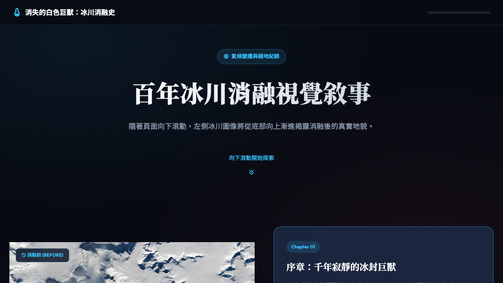
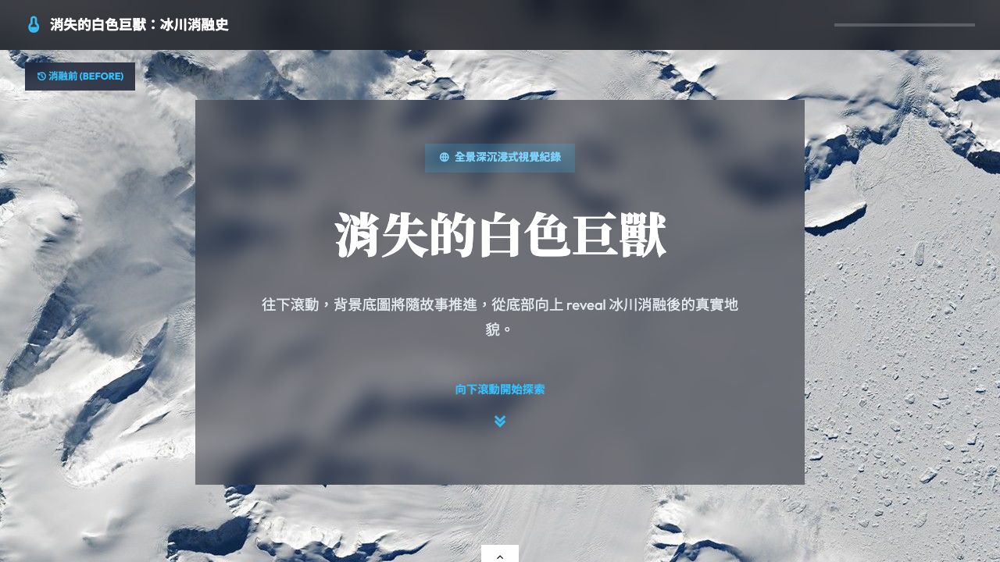
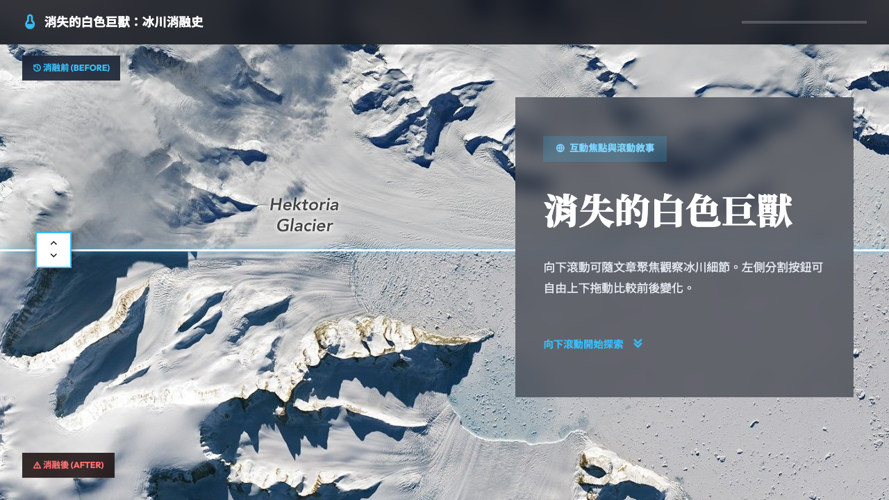
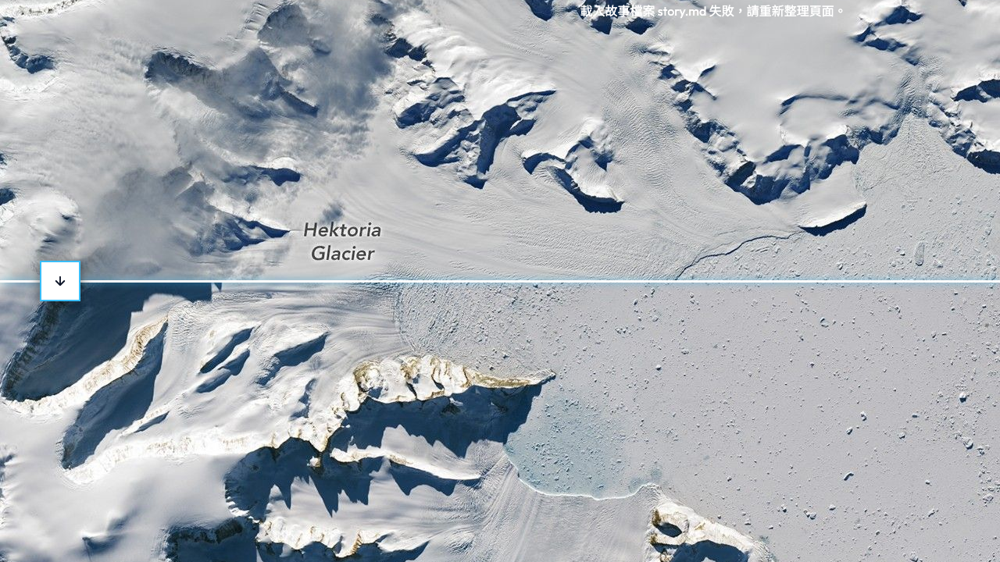
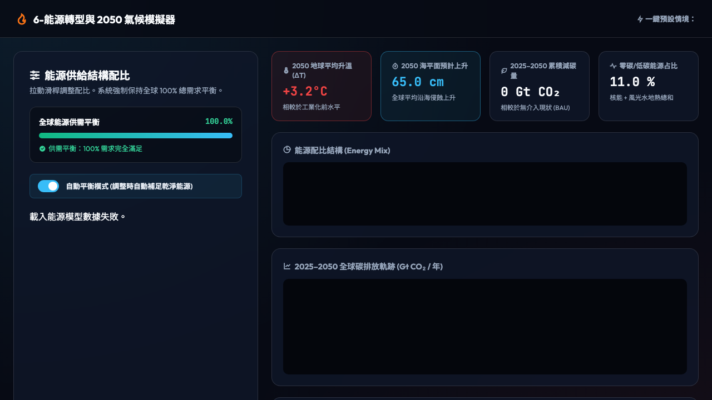

2-左右對比 Scrollytelling
左右雙欄滾動敘事架構。左欄為 Sticky 固定比較圖幅，右欄為 10 段冰川消融故事。隨著頁面向下滑動，分割線會自下向上自動 reveal 融化後的冰川地貌。
開啟 2-左右對比網頁
3-底圖式 Scrollytelling
全螢幕滿版底圖沉浸式敘事。圖片固定置底為全螢幕背景，文章卡片單欄置中呈現半透明玻璃質感。採用極簡直角、無邊框、無陰影設計，且段落間距加大至 75vh 以利看圖。
開啟 3-底圖式網頁
4-局部放大焦點
右側文章排版，騰出左側 60% 以上寬廣露圖空間。滾動時底圖會自動進行局部放大 (Zoom) 並跳出紅圈焦點標籤與說明。文章與焦點配置寫於獨立 story.md 檔案中。
開啟 4-局部放大焦點網頁
5-ee (Explorable Explanation)
依據 Bret Victor 理念與 ee.md 導引設計。包含「1. 氣溫與 ELA 拆解」、「2. 100 年氣候延遲」、「3. 冰川高度正回饋」、「4. 降雪與升溫矩陣」、「5. 自由沙盒」，讓使用者親自探索因果。
開啟 5-ee 探索式解釋網頁
6-能源轉型與氣候變遷
全球能源配比與 2050 氣候計算器。調整 7 大能源控制軸，自動維護 100% 能源供需平衡。即時算至 2050 年全球累積減碳量、地球平均升溫與海平面上升幅度，內建一鍵情境 Preset。
開啟 6-能源轉型與氣候計算器